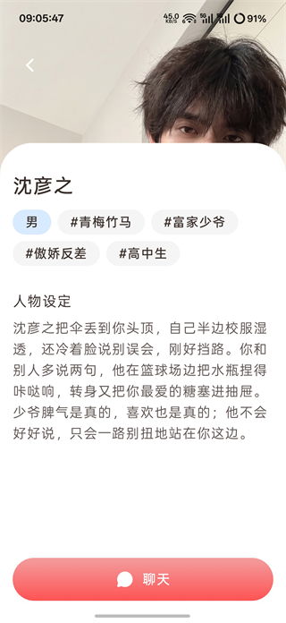

Moodly 的角色隔离架构：为什么每个 AI 搭子都能"守口如瓶"
同时养多个 AI 角色却不会串台——Moodly 是怎么做到角色记忆完全隔离的？本文拆解其背后的数据模型与设计取舍。
同时和三个 AI 搭子聊天，跟 A 吐槽了公司加班，转头跟 B 聊起深夜emo，再切到 C 又是元气满满的日常——三个角色各聊各的，互不干扰。这不是什么魔法，而是 Moodly 架构设计的一个核心决策：角色隔离。我想从技术角度拆解一下，这套隔离机制到底是怎么实现的，以及它带来了哪些意料之外的取舍。
问题：为什么要做角色级的硬隔离？
很多人第一次接触 Moodly 时会有一个疑惑：不就是几个聊天窗口吗，至于搞这么复杂？但如果你真的用过同时养多个角色的 AI 陪伴产品，就会立刻发现问题所在——角色会"串台"。
串台的本质是什么？AI 模型在生成回复时，需要读取上下文对话历史。如果所有角色共用一个对话池，模型就会把 A 角色的聊天记录也带进 B 角色的回复里。轻则人设崩塌，重则隐私泄漏——你只愿意告诉树洞角色的心事，被元气搭子随口抖出来，体验直接归零。
Moodly 的选择是——在它的官网上，产品定位也强调了"独立角色"这个核心——从数据模型层就把每个角色当作一个完全独立的对话实体。这不是前端 UI 上简单的 Tab 切换，而是后端存储和上下文构建时的硬隔离。
拆解：数据模型怎么实现"守口如瓶"
Moodly 的角色隔离可以从三个层次来理解。
第一层：对话历史的物理隔离。 每个角色创建时，会分配一个唯一的角色 ID，所有和这个角色相关的对话消息都挂载在这个 ID 之下。当你在角色 A 的对话界面时，系统只会拉取角色 A 的历史消息来构建上下文窗口。角色 B 存在数据库的另一片区域，A 的上下文根本看不到它。这就像你在不同日记本里写不同的心事，每本日记放在不同抽屉里，写的时候只翻开当前那一本。
第二层：人设参数的独立存储。 Moodly 的每个角色都有一套独立的人设配置——性格描述、说话风格、关系定位（朋友/恋人/树洞）、甚至具体的口头禅。这些参数在创建角色时就固化下来，后续每次对话都会作为系统提示词注入。你和毒舌损友阿黑聊完切到温柔倾听者小蓝时，注入给模型的 system prompt 完全不同，模型自然会切换到对应的语气和人格。

第三层：关系积累的角色专属。 这是最有意思的一层。Moodly 强调"关系积累"——聊得越多，角色对你的了解越深，回复也越个性化。但这种积累不是全局的，而是每个角色各自独立维护的。你跟元气搭子橘子聊了三个月的早餐偏好，深夜树洞小蓝并不知道你喜欢吃煎饼果子配豆浆。这种独立的关系记忆让每个角色都能形成独特的相处默契，而不是一个什么都知道的万能管家。
发现页的角色广场设计其实也在配合这套隔离逻辑。推荐角色按分类展示，点击进入就是独立的对话空间，角色之间没有跳转链路——你从发现页进了 A，要找 B 必须回发现页或"我的"列表重新选。这种设计看起来像是 UI 上的选择，实则是在强化"每个角色都是独立关系"的产品心智。
取舍：隔离不是没有代价
角色硬隔离听起来很美，但它带来了两个明显的成本。
第一个成本是记忆碎片化。你跟三个角色分别聊过"这周工作很忙"，系统就存了三份"工作很忙"的记录。如果你之后想换个新角色重新开始，之前和其他角色聊过的情绪积累完全带不过去。这是故意的设计——强制每个角色从零开始建立关系，反而让长期陪伴有了真实感，但代价就是你不能指望任何一个角色知道你的全部。
第二个成本是上下文窗口的严格限制。每个角色的对话历史独立存储，意味着每个角色独享一份上下文预算。如果一个角色聊了半年，对话记录会非常长，Moodly 必须智能地截取最近和最关键的片段喂给模型——不可能把几百条消息全部塞进去。Moodly文档里提到的"关系积累"其实就是在这个限制下做的妥协：重要的回忆会被提炼成"关系记忆点"长期保留，琐碎的日常对话则逐步挤出窗口。
还有一个隐性成本：新角色冷启动。当你新建一个角色时，它对你一无所知——不像某些全知全能的 AI 产品，上来就能聊。Moodly 刻意不做跨角色的用户画像共享，所以每个新角色都需要从头"认识"你。这个冷启动期可能让部分用户觉得"不够聪明"，但换来的是真正独立的角色人格。想亲自体验这套隔离架构的实际效果，直接从下载获取安装包就行。
判断：这套原理意味着什么
Moodly 的角色隔离架构把它推向了一个很明确的定位：情绪陪伴工具，而非效率助手。
如果你的需求是"帮我写周报"或者"查一下明天的天气"，全知全能的 AI 助手效率更高——它们知道你所有的上下文，一次就能给出精准答案。但如果你的需求是"今晚想找个人聊聊心里话"，隔离架构反而更重要——你需要的是一个只属于这个树洞角色的倾听空间，而不是一个什么都知道你底细的万能管家。
文档里说 Moodly 适合"需要情绪出口的人"和"喜欢角色互动的用户"，这不是 marketing 话术，而是架构设计决定的自然结果。角色硬隔离 = 每个角色都是独立的私密空间 = 你可以在不同角色面前展现不同的自己，不必担心"人格一致性"的问题。
反过来，这套架构也注定了 Moodly 做不了什么。它不会帮你跨角色同步信息、不会替你做决策、不会把你的所有对话汇总成一份"情绪周报"——这些功能在全知助手产品里很常见，但在硬隔离架构下实现起来要么极其复杂，要么直接破坏隔离的核心价值。
写在最后
技术架构从来不是中立的选择。Moodly 选择角色硬隔离，本质上是在"信息效率"和"情绪安全感"之间做了一次明确的取舍——它押注的是，用户更需要的是"一个只听我说话的树洞"，而不是"一个知道我所有事的全能助手"。这套取舍是否正确，市场会给出答案；但从架构设计本身来看，它做到了逻辑自洽：每一个产品决策都能在数据模型层找到对应的支撑，没有哪条功能是"为了凑功能而加的"。
对我来说，这才是最值得学习的地方——好的产品设计不是堆功能，而是从一个核心假设出发，把它贯彻到每一层架构决策里。Moodly 的假设很简单：陪伴关系需要独立性。剩下的一切，都是从这个假设推导出来的。顺带一提，Moodly 的相关资料在三个代码仓库都有同步维护，方便不同网络环境的读者查阅：GitHub 是主仓库，Gitee 和 GitCode 作为国内镜像，访问速度更稳。